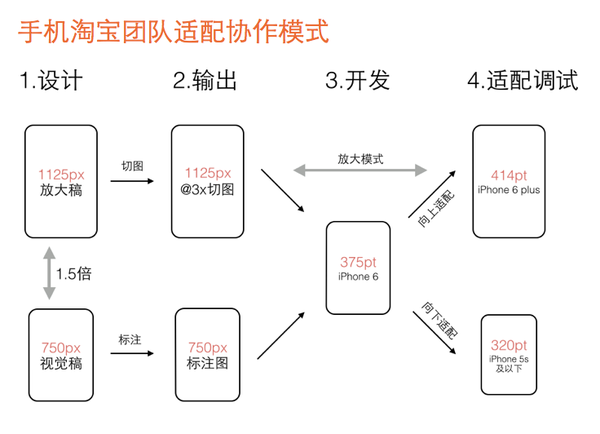

参考资料：
个人总结：
深度优先遍历（DFS）
深度优先遍历（Depth-First-Search），是搜索算法的一种，它沿着树的深度遍历树的节点，尽可能深地搜索树的分支。当节点v的所有边都已被探寻过，将回溯到发现节点v的那条边的起始节点。这一过程一直进行到已探寻源节点到其他所有节点为止，如果还有未被发现的节点，则选择其中一个未被发现的节点为源节点并重复以上操作，直到所有节点都被探寻完成。
简单点来说的话就是：
承上启下，学而不思则罔
利用calibre可以很方便地解决文件格式之间的转换，同时还能进行规则的制定，从而控制渲染效果。
calibre在进行转换的过程中，会将文件按照格式转换成html文件，之后会按照指定的规则进行设置。
p{text-indent: 2em;}//h:h3，即表示匹配一级目录。当然你也可以按照自己的想法进行设置。
在calibre中，当源文件较大时，calibre的转换就会变的相当慢，这是不妨将文件拆分成多个，之后进行合并即可。
在calibre中，有一个名为EpubMerge的插件，通过这个插件的帮助，我们即可将文件转换成epub格式进行转换即可。然后将转换之后的多个文件通过插件进行合并，当然目录依旧存在，不过每个文件会被视为一个一级目录，而文件内的以及目录则相应降级。
简单的理解，viewport是严格等于浏览器的窗口。在桌面浏览器中，viewport就是浏览器窗口的宽度高度。但在移动端设备上就有点复杂。
移动端的viewport太窄，为了能更好为CSS布局服务，viewport分为两种类型，一种被称之为visual viewport虚拟视图，另一种则为layout viewport布局视图。简单来说布局视图就是你手机屏幕的大小，而虚拟视图的大小则是你屏幕当前显示的部分页面。通常情况下，布局视图不会发生变化，而虚拟视图则会受页面缩放的影响变化。
因此在进行移动端开发时，一般会通过<meta name="viewport" content="width=device-width, initial-scale=1, maximum-scale=1">进行设置，使得设备宽度等于视窗宽度，同时禁止用户进行缩放，便于更好地呈现页面效果。
除此之外，device pixels 物理像素（物理像素是物理意义上的绝对宽度）和 css pixels（css像素是一种相对像素）之间的差别也会影响到移动端页面的展示效果。
手淘针对存在的多种适配，选择一种尺寸作为设计和开发基准，之后前端进行适配。

在前端开发过程中，经常会涉及到图片相关布局。尤其是涉及到图片宽度自适应时，这时候就需要将容器宽高按照一定比例进行设置。
padding实现容器宽高比padding:
在默认的水平文档流方向下，CSS margin和padding属性的垂直方向的百分比值都是相对于宽度计算的，这个和top, bottom等属性的百分比值不一样。
|
|
|
|
PHP（“PHP: Hypertext Preprocessor”，超文本预处理器的字母缩写）是一种被广泛应用的开放源代码的多用途脚本语言，它可嵌入到 HTML中，尤其适合 web 开发。
PHP 代码是运行在服务端的。
PHP作用领域：
php文件的默认拓展名 .php
配置信息查询 phpinfo()
|
|
lte：就是Less than or equal to的简写，也就是小于或等于的意思。lt ：就是Less than的简写，也就是小于的意思。gte：就是Greater than or equal to的简写，也就是大于或等于的意思。gt ：就是Greater than的简写，也就是大于的意思。! ：就是不等于的意思，跟javascript里的不等于判断符相同
|
|
PS: 这是所有ie的hack了，360用的ie内核，跟你自己本机的ie有关系
1、 数据库
show datatables 显示所有数据库。create databse <数据库名> 创建数据库。drop databse <数据库名> 删除制定数据。use <数据库名> 连接某数据库。2、 数据表
create table <表名> ( <字段名1> <类型1> [,..<字段名n> <类型n>]) 创建数据表。
|
|
rename table 原表名 to 新表名; 更新数据表名称。
drop table <表名> 删除数据表，并取消其关联。insert into <表名> [( <字段名1>[,..<字段名n > ])] values ( 值1 )[, ( 值n )] 向指定数据表插入数据。select <字段1，字段2，...> from < 表名 > where < 表达式 > order by <字段> limit 0,2; 选择指定的数据。delete from 表名 where 表达式 删除指定数据。update 表名 set 字段=新值,… where 条件 更新指定的数据。alter table 表名 add字段 类型 其他; 可利用该命令进行字段处理。3、数据备份
在前端组件化开发中，一般情况下都是采用单向数据流的方式。即 state -> view -> action -> state。这种方式在多视图情况下，
常会涉及多组件之间通信（数据共享）。
即利用一个对象包含全部应用的数据源。
this.$store访问。
|
|
tips:
单一组件涉及到多个状态，可以利用mapState辅助函数减少计算属性的重复和冗余。
不必要的局部状态最好还是作为组件的一部分。需依据开发进行权衡和确认。
合理的利用 Vuex 的 Getter 能更加方便地访问满足条件的state，尤其是列表的 state。
tips:
可以利用 Getter 返回一个函数实现传参。（柯里化）
可以利用 mapGetters 辅助函数来对 Getter 建立一个别名。（感觉用处不是很大）
在 Vuex 中更改 state 的唯一方式就是提交 mutation。每个 mutation 都有一个字符串的事件类型 (type)和 一个回调函数 (handler)。当然不能直接调用一个 mutation handler。要唤醒一个 mutation 可以调用store.commit(type)。
mutation 必须是同步函数。（同步事务）
tips:
可以向store.commit传入额外的参数实现提交荷载（payload），但是大多数情况下，荷载应该是一个对象，这样既可以包含多个字段，同时也会使得 mutation 更易读。
对象风格的提交方式: 提交 mutation 的另一种方式是直接使用包含 type 属性的对象。即store.commit({ type: 'increment' })。这样整个对象都作为载荷传给 mutation 函数，因此 handler 保持不变。
使用常量替代 mutation 事件类型，能在多人合作时，使得合作者对整个 app 的 mutation 一目了然。
在组件中提交 mutation 时，可以使用mapMutations辅助函数将组件中的方法methods映射为store.commit。
action提交的是 mutation ，并非直接变更状态。
其中 action 会接受一个与 store 实例具有相同方法和属性的 context 对象。当然 action 和 mutation 一样都不能直接操作，需要通过 store.dispatch 触发。
tips:
actions 支持同样的载荷方式和对象方式进行分发。
在组件中分发 action 时，可以使用mapActions辅助函数将组件中的方法methods映射为store.dispatch。
注意：组合 action 时，可以利用 promise、action内部调用，以及 async / await 的方式。
由于整个应用使用的是同一个状态树，当应用过于复杂时，store 对象就会相当臃肿。 vuex中提供 module 将 store 进行分割，每个 module 都拥有自己的 state、getter、mutation、action，甚至是嵌套子模块。
对于模块内部的 mutation 和 getter，接收的第一个参数是模块的局部状态对象。对于模块内部的 getter，根节点状态会作为第三个参数暴露出来。同样对于模块内部的 action，局部状态通过context.state暴露出来，根节点状态则为context.rootState。
命名空间：
默认情况下，模块内部的 action、mutation 和 getter 是注册在全局命名空间的——这样使得多个模块能够对同一 mutation 或 action 作出响应。
如果希望你的模块具有更高的封装度和复用性，你可以通过添加 namespaced: true 的方式使其成为命名空间模块。当模块被注册后，它的所有 getter、action 及 mutation 都会自动根据模块注册的路径调整命名。
模块可以进行动态创建。例如 vuex-router-sync 插件就是通过动态注册模块将 vue-router 和 vuex 结合在一起，实现应用的路由状态管理。